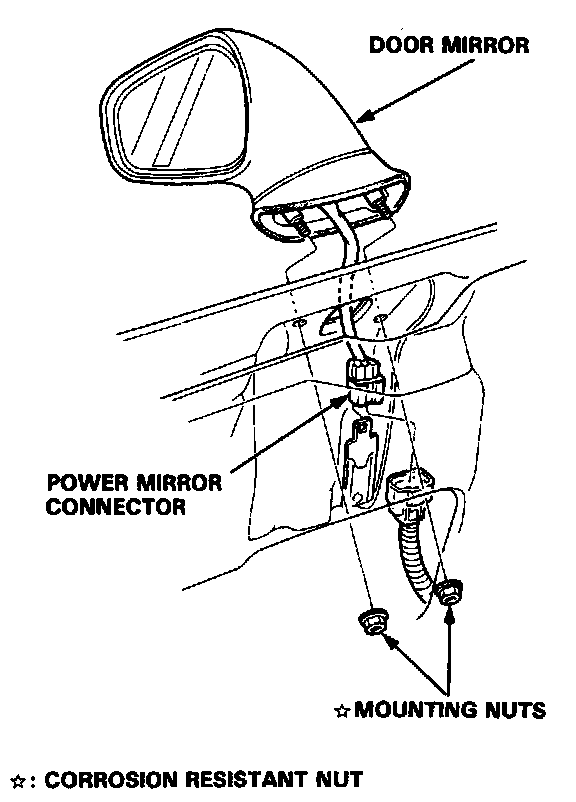
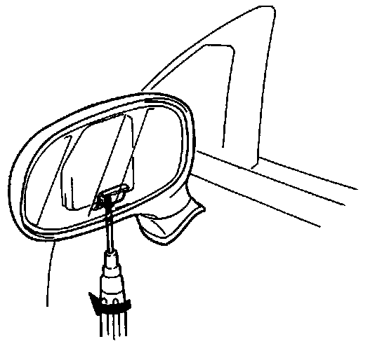
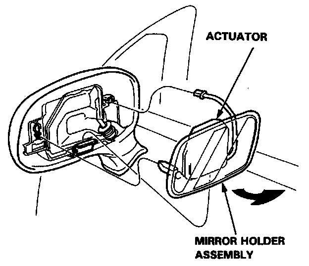

Mirrors: Service and Repair
DOOR MIRROR
Removal
NOTE: Raise the window fully.
1. Remove the door panel and carefully remove the plastic cover. Overhaul
2. Disconnect the power mirror connector.

3. Remove the 2 mounting nuts from the hole in the door while holding the mirror.
NOTE: Do not drop the mounting nuts inside the door.
4. Install the door mirror in the reverse order of removal.
5. With the door closed fully, check for water and air leaks.
NOTE: Do not use high pressure water.
Mirror Glass Replacement

1. Insert a screwdriver in the mirror through the service hole, and loosen the actuator retaining screw.

2. Pull the actuator and glass out from the mirror housing.
3. Install the actuator and glass in the reverse order of removal.